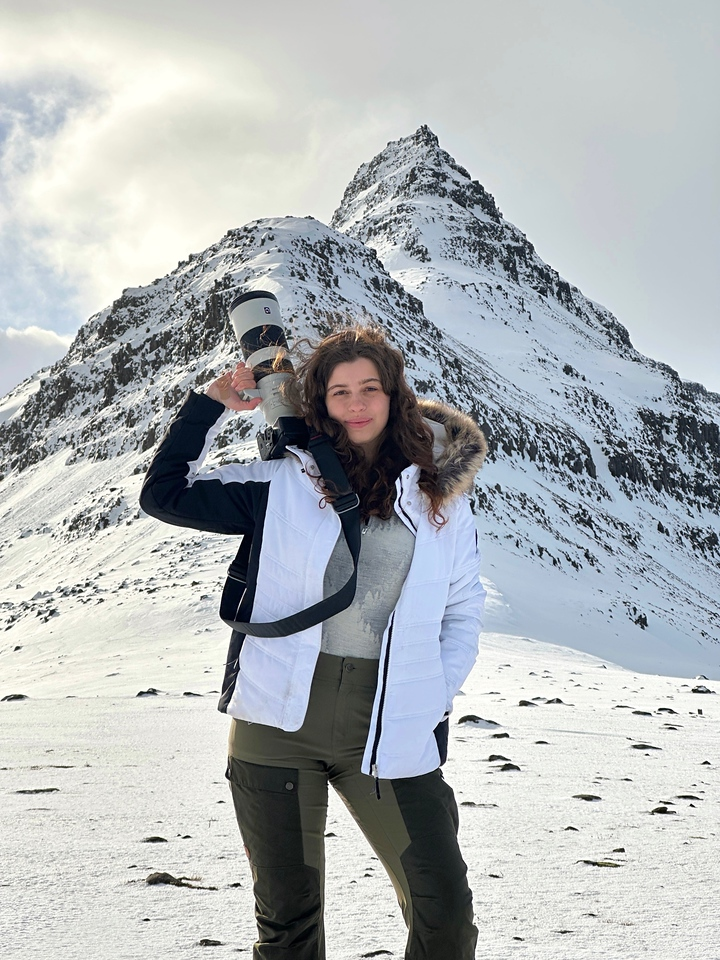

Conservation & Wildlife Photography
Shoshana
Coleman

About
Shoshana Coleman
Shoshana Coleman, operating as Sho Time Studios, is a wildlife and conservation photographer, filmmaker, and 2026 Girls Who Click Ambassador with a lifelong devotion to protecting nature. Through her work, she strives to foster empathy for endangered species and inspire a deeper sense of responsibility for the future of wildlife and their ecosystems. A graduate of American University with a B.A. in Justice, Law, and Criminology, her background informs her perspective on issues like illegal wildlife trade and human-wildlife conflict. She interned with the International League of Conservation Photographers and has worked with organizations such as SANCCOB and Cheetah Conservation Botswana. Based in Boston, Massachusetts, Shoshana has worked around the globe and is happiest wherever there's wildlife to discover, camera in hand for the next story.
Looking for a photographer?
I also photograph portraits, events, pets, brands and concerts.
See Sessions →